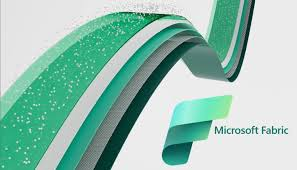
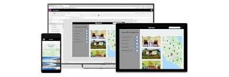

About
Recent graduate in Information and Communication Engineering from BUP, specializing in Data Science, AI, ML, BI, and Cloud technologies.
Skilled in the full data lifecycle using Microsoft Fabric, Power BI, and automation tools like Power Apps, Power Automate, and Copilot Studio.
Experienced with Azure AI Foundry, Vertex AI, Mixpanel, and Zoho Analytics for model deployment, analytics, and performance insights.
Passionate about building scalable, intelligent, and data-driven solutions that drive innovation.
Experience
Junior Software Engineer — Software Solutions Team, Smart Technologies Ltd
Sept 2025 — Present
- Completed a 1-month Microsoft Fabric (DP-600) workshop, applying Power BI and Pipelines to design end-to-end reporting workflows — automating data ingestion, transformation, and visualization across multiple sources.
- Integrated Mixpanel into a budget app to track 10+ user interaction metrics and funnels, leveraging heatmaps and session replays for data-driven product enhancements; used Zoho Analytics for cross-platform performance evaluation.
- Conducted a comparative study on various analytics and AI platforms, including Azure AI Foundry and Vertex AI, for model deployment, and business intelligence, and developed AI agents and enterprise-grade projects to drive scalable AI adoption within business workflows.
Intern — Systems & Support Unit, Global Resource Mobilisation and Partnerships, BRAC
Dec 2024 — Mar 2025
- Assisted in troubleshooting, updating workflows, and optimizing the JIRA-based Grant Management System while collaborating with cross-functional teams to gather technical requirements and contributing to system design.
- Supported the integration and training of the AML/CFT screening system; conducted onboarding sessions for BRAC’s Asian and African microfinance and legal teams.
- Developed technical documentation, user manuals, and training materials for the JIRA-based GMS and the CSI Sanction Screening System.
Beta Ambassador — Microsoft Learn Student Ambassador
July 2023 — June 2025
- Served as a Beta Ambassador for nearly 1.5 years, leading initiatives that promoted AI, Cloud, and Microsoft technologies within the student community, designed impactful sessions and mentorship programs in collaboration with other Ambassadors.
- Mentored Students to become Future Ambassadors, partnered with Tech Communities to expand event reach through strategic promotions and incentives.
- Built technical expertise via hands-on projects with Azure Service, developing scalable and intelligent cloud solutions.
Expertise & Projects
Selected areas where I have deep, hands-on experience, I have explained in details in my Blogs!
Microsoft Fabric & Power BI
FabricPower BIAnalytics
Designed reporting workflows that reduced manual prep by 25% and built dashboards to improve financial visibility.
Azure AI Agents & Copilot Studio
AzureCopilotAI Agents
Designed and deployed AI agents using Azure AI Foundry and Copilot Studio to automate workflows and support end users.
Power Apps & Power Automate
Power AppsPower AutomateLow-code
Built low-code apps and automated workflows to streamline data entry, approvals, and reporting across teams.
Mixpanel Dashboards & Product Analytics
MixpanelFunnelsA/B
Built Mixpanel dashboards and funnels to measure retention; used heatmaps and session replays to inform 5+ product changes.
Analytics & Platform Analysis
SnowflakeDatabricksAmplitude
Comparative analysis across 10+ analytics platforms (Snowflake vs Databricks, Amplitude vs Mixpanel/Heap) guiding platform choices.
My Works

End to End MS Fabric Project
Created a unified analytics system for oil production data using Fabric pipelines, notebooks, and Power BI visualization.
Mixpanel Integration using SDKs
This implementation demonstrates how Mixpanel addresses the analytics gap by providing granular, real-time data across the user journey
Created Dashboard for Business Insights
The dashboard provides interactive visualizations and key performance indicators (KPIs) to help stakeholders make informed decisions based on real-time data.

PowerApps-Based Order Email Management System
The system streamlines order management processes, automating email notifications and improving response times.
Power Automate Workflow Automations
Developed automated workflows using Power Automate to streamline repetitive tasks, enhance productivity, and improve operational efficiency.